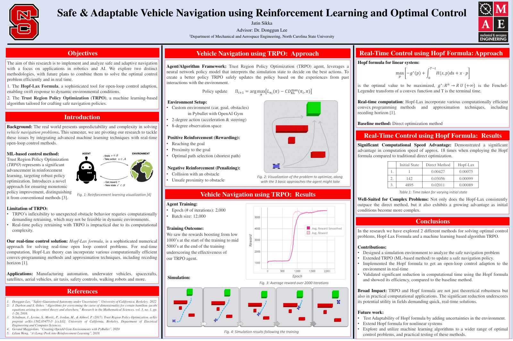

AI/ML + Controls Framework for Robotics
NC State University

Research at the intersection of reinforcement learning and optimal control for autonomous systems. Focused on combining learning-based methods with classical control theory to achieve safe, reliable robot behavior.
Key work includes Safe Autonomous Vehicle Navigation using Reinforcement Learning and Optimal Control, developing navigation policies that satisfy safety constraints through a hybrid approach combining RL exploration with control-theoretic guarantees.
Reinforcement Learning
Optimal Control
Autonomous Navigation
Safety Constraints
Reports & Presentations